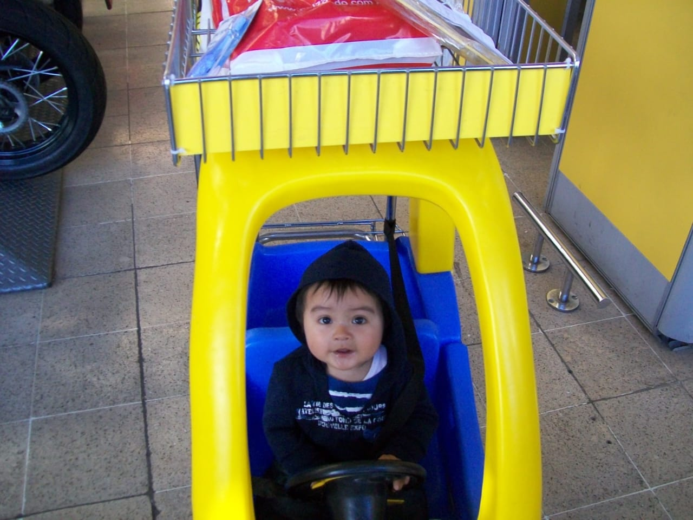

Mi Biografía
Mi vida personal
Mi Foto

Mi historia actual
Mi nombre es Cristian Arbey Benavides Márquez. Nací en la ciudad de Ipiales, departamento de Nariño en 2008. Actualmente estudio Análisis y Desarrollo de Software, donde he aprendido temas relacionados con programación, páginas web y tecnología.
Soy una persona responsable, con metas claras y muchas ganas de seguir aprendiendo cada día.
Mi Infancia

Tuve una infancia normal y muy feliz, creciendo en una familia llena de buenos valores, respeto y unión. Desde pequeño aprendí la importancia de la humildad, la responsabilidad y el amor por la familia.
Mi vida tanto en la escuela como en mi hogar estuvo rodeada de momentos especiales, aprendizajes y personas que siempre me apoyaron. Gracias a ello, hoy sigo conservando esos valores que me han ayudado a ser la persona que soy.
Mis Gustos
- Leer
- Escuchar música salsa
- Salir a caminar
- Ver películas y series
Mis Sueños y Metas
Uno de mis mayores sueños es tener negocios, crear empresas y construir emprendimientos exitosos.
También deseo viajar por el mundo y conocer diferentes culturas, personas y lugares.
Links R.D
Música que me gusta
Uno de los generos musicales que más disfruto es escuchar salsa.